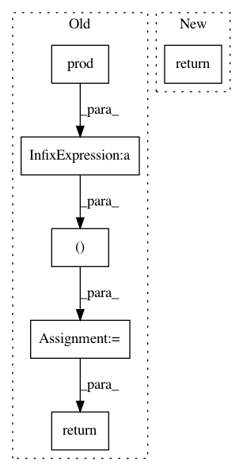

5809cb0b339612434f4f332a91a2cd3e4570c34d,gpflow/transforms.py,LowerTriangular,backward_tensor,#LowerTriangular#Any#,392
Before Change
CAVEAT: Requires defined shape and can"t work with unknown shape.
size = np.prod(y.shape.as_list())
N = int(np.sqrt(size / self.num_matrices))
reshaped = tf.reshape(y, shape=(self.num_matrices, N, N))
indices = np.array([np.hstack(x) for x in
itertools.product(np.arange(self.num_matrices), np.dstack(np.tril_indices(N))[0])])
triangular = tf.reshape(tf.gather_nd(reshaped, indices), shape=[-1])
return triangular
def log_jacobian_tensor(self, x):
return tf.zeros((1,), settings.float_type)
After Change
indices = itertools.product(np.arange(self.num_matrices), indices)
indices = np.array([np.hstack(x) for x in indices])
triangular = tf.gather_nd(y, indices)
return tf.reshape(triangular, [self.num_matrices, (self.N**2 + self.N) // 2])
def log_jacobian_tensor(self, x):
return tf.zeros((1,), settings.float_type)
In pattern: SUPERPATTERN
Frequency: 3
Non-data size: 6
Instances
Project Name: GPflow/GPflow
Commit Name: 5809cb0b339612434f4f332a91a2cd3e4570c34d
Time: 2018-02-26
Author: james@prowler.io
File Name: gpflow/transforms.py
Class Name: LowerTriangular
Method Name: backward_tensor
Project Name: keras-team/keras
Commit Name: a744b600e94ae00fbec71ef493afdff48bc3816b
Time: 2015-11-18
Author: francois.chollet@gmail.com
File Name: keras/layers/core.py
Class Name: Flatten
Method Name: get_output
Project Name: keras-team/keras
Commit Name: 037e592f2ba7c18b71bc9b39f84de11af0252863
Time: 2016-01-08
Author: francois.chollet@gmail.com
File Name: keras/backend/theano_backend.py
Class Name:
Method Name: flatten